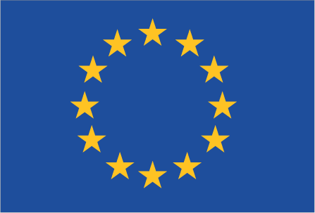

Europe :: EUROPEAN UNION
Introduction :: EUROPEAN UNION
-
The evolution of what is today the European Union (EU) from a regional economic agreement among six neighboring states in 1951 to today's hybrid intergovernmental and supranational organization of 28 countries across the European continent stands as an unprecedented phenomenon in the annals of history. Dynastic unions for territorial consolidation were long the norm in Europe; on a few occasions even country-level unions were arranged - the Polish-Lithuanian Commonwealth and the Austro-Hungarian Empire were examples. But for such a large number of nation-states to cede some of their sovereignty to an overarching entity is unique.Although the EU is not a federation in the strict sense, it is far more than a free-trade association such as ASEAN, NAFTA, or Mercosur, and it has certain attributes associated with independent nations: its own flag, currency (for some members), and law-making abilities, as well as diplomatic representation and a common foreign and security policy in its dealings with external partners.Thus, inclusion of basic intelligence on the EU has been deemed appropriate as a separate entity in The World Factbook. However, because of the EU's special status, this description is placed after the regular country entries.Following the two devastating World Wars in the first half of the 20th century, a number of far-sighted European leaders in the late 1940s sought a response to the overwhelming desire for peace and reconciliation on the continent. In 1950, the French Foreign Minister Robert SCHUMAN proposed pooling the production of coal and steel in Western Europe and setting up an organization for that purpose that would bring France and the Federal Republic of Germany together and would be open to other countries as well. The following year, the European Coal and Steel Community (ECSC) was set up when six members - Belgium, France, West Germany, Italy, Luxembourg, and the Netherlands - signed the Treaty of Paris.The ECSC was so successful that within a few years the decision was made to integrate other elements of the countries' economies. In 1957, envisioning an "ever closer union," the Treaties of Rome created the European Economic Community (EEC) and the European Atomic Energy Community (Euratom), and the six member states undertook to eliminate trade barriers among themselves by forming a common market. In 1967, the institutions of all three communities were formally merged into the European Community (EC), creating a single Commission, a single Council of Ministers, and the body known today as the European Parliament. Members of the European Parliament were initially selected by national parliaments, but in 1979 the first direct elections were undertaken and have been held every five years since.In 1973, the first enlargement of the EC took place with the addition of Denmark, Ireland, and the UK. The 1980s saw further membership expansion with Greece joining in 1981 and Spain and Portugal in 1986. The 1992 Treaty of Maastricht laid the basis for further forms of cooperation in foreign and defense policy, in judicial and internal affairs, and in the creation of an economic and monetary union - including a common currency. This further integration created the European Union (EU), at the time standing alongside the EC. In 1995, Austria, Finland, and Sweden joined the EU/EC, raising the membership total to 15.A new currency, the euro, was launched in world money markets on 1 January 1999; it became the unit of exchange for all EU member states except Denmark, Sweden, and the UK. In 2002, citizens of those 12 countries began using euro banknotes and coins. Ten new countries joined the EU in 2004 - Cyprus, the Czech Republic, Estonia, Hungary, Latvia, Lithuania, Malta, Poland, Slovakia, and Slovenia. Bulgaria and Romania joined in 2007 and Croatia in 2013, bringing the current membership to 28. (Seven of these new countries - Cyprus, Estonia, Latvia, Lithuania, Malta, Slovakia, and Slovenia - have now adopted the euro, bringing total euro-zone membership to 19.)In an effort to ensure that the EU could function efficiently with an expanded membership, the Treaty of Nice (concluded in 2000; entered into force in 2003) set forth rules to streamline the size and procedures of EU institutions. An effort to establish a "Constitution for Europe," growing out of a Convention held in 2002-2003, foundered when it was rejected in referenda in France and the Netherlands in 2005. A subsequent effort in 2007 incorporated many of the features of the rejected draft Constitutional Treaty while also making a number of substantive and symbolic changes. The new treaty, referred to as the Treaty of Lisbon, sought to amend existing treaties rather than replace them. The treaty was approved at the EU intergovernmental conference of the then 27 member states held in Lisbon in December 2007, after which the process of national ratifications began. In October 2009, an Irish referendum approved the Lisbon Treaty (overturning a previous rejection) and cleared the way for an ultimate unanimous endorsement. Poland and the Czech Republic ratified soon after. The Lisbon Treaty came into force on 1 December 2009 and the EU officially replaced and succeeded the EC. The Treaty's provisions are part of the basic consolidated versions of the Treaty on European Union (TEU) and the Treaty on the Functioning of the European Union (TFEU) now governing what remains a very specific integration project.Frustrated by a remote bureaucracy in Brussels and massive migration into the country, UK citizens on 23 June 2016 narrowly voted to leave the EU. The so-called “Brexit” will take years to carry out, but could embolden skeptics of EU membership in other member states.
Geography :: EUROPEAN UNION
-
Europe between the North Atlantic Ocean in the west and Russia, Belarus, and Ukraine to the eastEuropetotal: 4,479,968 sq kmrank by area (sq km):1. France (includes five overseas regions) 643,8012. Spain 505,3703. Sweden 450,2954. Germany 357,0225. Finland 338,1456. Poland 312,6857. Italy 301,3408. United Kingdom (includes Gibraltar) 243,6179. Romania 238,39110. Greece 131,95711. Bulgaria 110,87912. Hungary 93,02813. Portugal 92,09014. Austria 83,87115. Czechia 78,86716. Ireland 70,27317. Lithuania 65,30018. Latvia 64,58919. Croatia 56,59420. Slovakia 49,03521. Estonia 45,22822. Denmark 43,09423. Netherlands 41,54324. Belgium 30,52825. Slovenia 20,27326. Cyprus 9,25127. Luxembourg 2,58628. Malta 316less than one-half the size of the UStotal: 13,271 kmborder countries (17): Albania 212 km, Andorra 118 km, Belarus 1,176 km, Bosnia and Herzegovina 956 km, Holy See 3 km, Liechtenstein 34 km, Macedonia 396 km, Moldova 683 km, Monaco 6 km, Montenegro 19 km, Norway 2,375 km, Russia 2,435 km, San Marino 37 km, Serbia 1,353 km, Switzerland 1,729 km, Turkey 415 km, Ukraine 1,324 kmnote: data for European continent only65,992.9 kmcold temperate; potentially subarctic in the north to temperate; mild wet winters; hot dry summers in the southfairly flat along Baltic and Atlantic coasts; mountainous in the central and southern areasmean elevation: about 300 melevation extremes: lowest point: Lammefjord, Denmark -7 m; Zuidplaspolder, Netherlands -7 mhighest point: Mont Blanc 4,810 miron ore, natural gas, petroleum, coal, copper, lead, zinc, bauxite, uranium, potash, salt, hydropower, arable land, timber, fish154,539.82 sq km (2011 est.)population distribution varies considerably from country to country, but tends to follow a pattern of coastal and river settlement, with urban agglomerations forming large hubs facilitating large scale housing, industry, and commerce; the area in and around the Netherlands, Belgium, and Luxembourg (known collectively as Benelux), is the most densely populated area in the EUflooding along coasts; avalanches in mountainous area; earthquakes in the south; volcanic eruptions in Italy; periodic droughts in Spain; ice floes in the Balticvarious forms of air, soil, and water pollution; see individual country entriesparty to: Air Pollution, Air Pollution-Nitrogen Oxides, Air Pollution-Persistent Organic Pollutants, Air Pollution-Sulphur 94, Antarctic-Marine Living Resources, Biodiversity, Climate Change, Climate Change-Kyoto Protocol, Desertification, Hazardous Wastes, Law of the Sea, Ozone Layer Protection, Tropical Timber 83, Tropical Timber 94signed but not ratified: Air Pollution-Volatile Organic Compounds
People and Society :: EUROPEAN UNION
-
total: 516,195,432rank by population:1. Germany 80,594,0172. France 67,106,1613. United Kingdom 64,769,4524. Italy 62,137,8025. Spain 48,958,1596. Poland 38,476,2697. Romania 21,529,9678. Netherlands 17,084,7199. Belgium 11,491,34610. Portugal 10,839,51411. Greece 10,768,47712. Czechia 10,674,72313. Sweden 9,960,48714. Hungary 9,850,84515. Austria 8,754,41316. Bulgaria 7,101,51017. Denmark 5,605,94818. Finland 5,518,37119. Slovakia 5,445,82920. Ireland 5,011,10221. Croatia 4,292,09522. Lithuania 2,823,85923. Slovenia 1,972,12624. Latvia 1,944,64325. Estonia 1,251,58126. Cyprus 1,221,54927. Luxembourg 594,13028. Malta 416,338 (July 2017 est.)Bulgarian, Croatian, Czech, Danish, Dutch, English, Estonian, Finnish, French, German, Greek, Hungarian, Irish, Italian, Latvian, Lithuanian, Maltese, Polish, Portuguese, Romanian, Slovak, Slovene, Spanish, Swedishnote: only the 24 official languages are listed; German, the major language of Germany, Austria, and Switzerland, is the most widely spoken mother tongue - about 16% of the EU population; English is the most widely spoken foreign language - about 38% of the EU population is conversant with it (2012)Roman Catholic 48%, Protestant 12%, Orthodox 8%, other Christian 4%, Muslim 2%, other 1% (includes Jewish, Sikh, Buddhist, Hindu), atheist 7%, non-believer/agnostic 16%, unspecified 2% (2012 est.)0-14 years: 15.5% (male 40,853,366/female 38,783,889)15-24 years: 10.9% (male 28,680,885/female 27,396,922)25-54 years: 41.8% (male 108,312,731/female 106,407,509)55-64 years: 12.9% (male 32,287,068/female 34,128,099)65 years and over: 19.1% (male 42,074,448/female 56,127,861) (2017 est.)total: 42.9 yearsmale: 41.5 yearsfemale: 44.4 years (2017 est.)country comparison to the world: 210.23% (2016 est.)country comparison to the world: 18010.1 births/1,000 population (2016 est.)10.2 deaths/1,000 population (2016 est.)2.5 migrant(s)/1,000 population (2016 est.)population distribution varies considerably from country to country, but tends to follow a pattern of coastal and river settlement, with urban agglomerations forming large hubs facilitating large scale housing, industry, and commerce; the area in and around the Netherlands, Belgium, and Luxembourg (known collectively as Benelux), is the most densely populated area in the EUat birth: 1.06 male(s)/female0-14 years: 1.05 male(s)/female15-24 years: 1.05 male(s)/female25-54 years: 1.02 male(s)/female55-64 years: 0.95 male(s)/female65 years and over: 0.75 male(s)/femaletotal population: 0.96 male(s)/female (2016 est.)total: 4 deaths/1,000 live birthsmale: 4.4 deaths/1,000 live birthsfemale: 3.6 deaths/1,000 live births (2016 est.)country comparison to the world: 192total population: 80.2 yearsmale: 77.4 yearsfemale: 83.2 years (2017 est.)country comparison to the world: 411.61 children born/woman (2016 est.)5.4 beds/1,000 population (2011)note - see individual entries of member statesnote - see individual entries of member statesnote - see individual entries of member statestotal: 22.7%male: 22.9%female: 22.5% (2015 est.)
Government :: EUROPEAN UNION
-
conventional long form: European Unionabbreviation: EUa hybrid and unique intergovernmental and supranational organizationname: Brussels (Belgium), Strasbourg (France), Luxembourg, Frankfurt (Germany); note - the European Council, a gathering of the EU heads of state and/or government, and the Council of the European Union, a ministerial-level body of ten formations, meet in Brussels, Belgium, except for Council meetings held in Luxembourg in April, June, and October; the European Parliament meets in Brussels and Strasbourg, France, and has administrative offices in Luxembourg; the Court of Justice of the European Union is located in Luxembourg; and the European Central Bank is located in Frankfurt, Germanygeographic coordinates: (Brussels) 50 50 N, 4 20 Etime difference: UTC+1 (6 hours ahead of Washington, DC, during Standard Time)daylight saving time: +1hr, begins last Sunday in March; ends last Sunday in October28 countries: Austria, Belgium, Bulgaria, Croatia, Cyprus, Czech Republic, Denmark, Estonia, Finland, France, Germany, Greece, Hungary, Ireland, Italy, Latvia, Lithuania, Luxembourg, Malta, Netherlands, Poland, Portugal, Romania, Slovakia, Slovenia, Spain, Sweden, UK; note - candidate countries: Albania, Macedonia, Montenegro, Serbia, Turkeynote: there are non-European overseas countries and territories (OCTs) having special relations with Denmark, France, the Netherlands, and the UK (list is annexed to the Treaty on the Functioning of the European Union), that are associated with the Union to promote their economic and social development; member states apply to their trade with OCTs the same treatment as they accord each other pursuant to the treaties; OCT nationals are in principle EU citizens, but these countries are neither part of the EU, nor subject to the EUthere are 25 OCTs (1 with Denmark [Greenland], 6 with France [French Polynesia; French Southern and Antarctic Lands; New Caledonia; Saint Barthelemy; Saint Pierre and Miquelon; Wallis and Futuna], 6 with the Netherlands [Aruba, Bonaire, Curacao, Saba, Sint Eustatius, Sint Maarten], and 12 with the UK [Anguilla; Bermuda; British Antarctic Territory; British Indian Ocean Territory; British Virgin Islands; Cayman Islands; Falkland Islands; Montserrat; Pitcairn Islands; Saint Helena, Ascension, and Tristan da Cunha; South Georgia and the South Sandwich Islands; Turks and Caicos Islands]), of which 22 have joined the Overseas Countries and Territories Association (OCTA); the 3 OCTs that are not part of OCTA (British Antarctic Territory, British Indian Ocean Territory, South Georgia and the South Sandwich Islands) do not have a permanent population7 February 1992 (Maastricht Treaty signed establishing the European Union); 1 November 1993 (Maastricht Treaty entered into force)note: the Treaties of Rome, signed on 25 March 1957 and subsequently entered into force on 1 January 1958, created the European Economic Community and the European Atomic Energy Community; a series of subsequent treaties have been adopted to increase efficiency and transparency, to prepare for new member states, and to introduce new areas of cooperation - such as a single currency; the Treaty of Lisbon, signed on 13 December 2007 and entered into force on 1 December 2009 is the most recent of these treaties and is intended to make the EU more democratic, more efficient, and better able to address global problems with one voiceEurope Day (also known as Schuman Day), 9 May (1950); note - the day in 1950 that Robert SCHUMAN proposed the creation of what became the European Coal and Steel Community, the progenitor of today's European Union, with the aim of achieving a united Europehistory: none; note - the EU legal order relies primarily on two consolidated texts encompassing all provisions as amended from a series of past treaties: the Treaty on European Union (TEU), as modified by the Lisbon Treaty states in Article 1 that "the HIGH CONTRACTING PARTIES establish among themselves a EUROPEAN UNION ... on which the Member States confer competences to attain objectives they have in common"; Article 1 of the TEU states further that the EU is "founded on the present Treaty and on the Treaty on the Functioning of the European Union (hereinafter referred to as 'the Treaties')," both possessing the same legal value; Article 6 of the TEU provides that a separately adopted Charter of Fundamental Rights of the European Union "shall have the same legal value as the Treaties"amendments: European Union treaties can be amended in several ways: 1) Ordinary Revision Procedure (for key amendments to the treaties); initiated by an EU country’s government, by the EU Parliament, or by the EU Commission; following adoption of the proposal by the European Council, a convention is formed of national government representatives to review the proposal and subsequently a conference of government representatives also reviews the proposal; passage requires ratification by all EU countries; 2) Simplified Revision Procedure (for amendment of EU internal policies and actions); passage of a proposal requires unanimous European Council vote following European Council consultation with the EU Commission, the European Council, and the European Parliament, and requires ratification by all EU countries; 3) Passerelle Clause (allows the alteration of a legislative procedure without a formal amendment of the treaties); 4) Flexibility Clause (permits the EU to decide in subject areas not covered by the EU treaties); note - the Treaty of Lisbon (signed in December 2007 and effective in December 2009) amended the two treaties that formed the EU - the Maastricht Treaty (1993) and the Treaty of Rome (1958), known in updated form as the Treaty on the Functioning of the European Union (2007) (2016)unique supranational law system in which, according to an interpretive declaration of member-state governments appended to the Treaty of Lisbon, "the Treaties and the law adopted by the Union on the basis of the Treaties have primacy over the law of Member States" under conditions laid down in the case law of the Court of Justice; key principles of EU law include fundamental rights as guaranteed by the Charter of Fundamental Rights and as resulting from constitutional traditions common to the EU's 28-member states; EU law is divided into 'primary' and 'secondary' legislation; primary legislation is derived from the consolidated versions of the Treaty on European Union and the Treaty on the Functioning of the European Union and are the basis for all EU action; secondary legislation - which includes directives, regulations, and decisions - is derived from the principles and objectives set out in the treaties18 years of age (16 years in Austria); universal; voting for the European Parliament is permitted in each member stateunder the EU treaties there are three distinct institutions, each of which conducts functions that may be regarded as executive in nature:the European Council: brings together heads of state and government, along with the president of the European Commission, and meets at least four times a year; its aim is to provide the impetus for the development of the Union and to issue general policy guidelines; the Treaty of Lisbon established the position of "permanent" (full-time) president of the European Council; leaders of the EU member states appoint the president for a 2 1/2 year term, renewable once; the president's responsibilities include chairing the EU summits and providing policy and organizational continuity; the current president is Donald TUSK (Poland), since 1 December 2014, succeeding Herman VAN ROMPUY (Belgian; 2009-14)the Council of the European Union: consists of ministers of each EU member state and meets regularly in 10 different configurations depending on the subject matter; it conducts policymaking and coordinating functions as well as legislative functions; ministers of EU member states chair meetings of the Council of the EU based on a 6-month rotating presidency except for the meetings of EU Foreign Ministers in the Foreign Affairs Council that are chaired by the High Representative for Foreign Affairs and Security Policythe European Commission: headed by a College of Commissioners comprised of 28 members (one from each member country) including the president; each commissioner is responsible for one or more policy areas; the Commission's main responsibilities include the sole right to initiate EU legislation (except for foreign and security/defense policy), promoting the general interest of the EU, acting as "guardian of the Treaties" by monitoring the application of EU law, implementing/executing the EU budget, managing programs, negotiating on the EU's behalf in core policy areas such as trade, and ensuring the Union's external representation in some policy areas; its current president is Jean-Claude JUNCKER (Luxembourg) elected on 15 July 2014 (took office on 1 November 2014); the president of the European Commission is nominated by the European Council and formally "elected" by the European Parliament; the Commission president allocates specific responsibilities among the members of the College (appointed by common accord of the member state governments in consultation with the president-elect); the European Parliament confirms the entire Commission for a 5-year term; President JUNCKER reorganized the structure of the College around clusters or project teams coordinated by 7 vice presidents in line with the current Commission's main political priorities and appointed Frans TIMMERMANS (Netherlands) to act as his first vice president; the confirmation process for the next Commission expected be held in the fall of 2019note: for external representation and foreign policy making, leaders of the EU member states appointed Federica MOGHERINI (Italy) as the High Representative of the European Union for Foreign Affairs and Security Policy; MOGHERINI took office on 1 November 2014, succeeding Catherine ASHTON (UK) (2009-14); the High Representative's concurrent appointment as Vice President of the European Commission endows her position with the policymaking influence of the Council of the EU and the budgetary influence (subject to Council's approval) of the Council of the EU and the budgetary/management influence of the European Commission; the High Representative helps develop and implement the EU's Common Foreign and Security Policy and Common Security and Defense Policy component, chairs the Foreign Affairs Council, represents and acts for the Union in many international contexts, and oversees the European External Action Service, the diplomatic corps of the EU, established on 1 December 2010description: two legislative bodies consisting of the Council of the European Union (28 seats; ministers representing the 28 member states) and the European Parliament (751 seats; seats allocated among member states roughly in proportion to population size; members elected by proportional representation to serve 5-year terms); note - the European Parliament President, Martin SCHULZ (German Socialist), was elected in January 2017 by a majority of fellow members of the European Parliament (MEPs) and represents the Parliament within the EU and internationally; the Council of the EU and the MEPs share responsibilities for adopting the bulk of EU legislation, normally acting in co-decision on Commission proposals (but not in the area of Common Foreign and Security Policy, which is governed by consensus of the EU member state governments)elections: last held on 22-25 May 2014 (next to be held May-June 2019)election results: percent of vote - EPP 29.4%, S&D 25.4%, ECR 9.3%, ALDE 8.9%, GUE/NGL 6.9%, Greens/EFA 6.7%, EFD 6.4%, independent 6.9%; seats by party - EPP 221, S&D 191, ECR 70, ALDE 67, GUE/NGL 52, Greens/EFA 50, EFD 48, independent 52highest court(s): European Court of Justice or ECJ (consists of 28 judges - 1 from each member state); the court may sit as a full court, in a "Grand Chamber" of 13 judges in special cases but usually in chambers of 3 to 5 judgesnote: the ECJ is the supreme judicial authority of the EU; ECJ ensures that EU law is interpreted and applied uniformly throughout the EU, resolves disputed issues among the EU institutions and with member states, issues opinions on questions of EU law referred by member state courtsjudge selection and term of office: judges appointed by the common consent of the member states to serve 6-year renewable termssubordinate courts: General Court; Civil Service TribunalAlliance of Liberals and Democrats for Europe or ALDE [Guy VERHOFSTADT]European United Left-Nordic Green Left or GUE/NGL [Gabriele ZIMMER]Europe of Freedom and Direct Democracy or EFDD [Nigel FARAGE and David BORRELLI]Europe of Nations and Freedom or ENF or ENL [Marine LE PEN and Marcel DE GRAAFF]European Conservatives and Reformists or ECR [Syed KAMALL, Ryszard LEGUTKO]European Greens/European Free Alliance or Greens/EFA [Ska KELLER and Philippe LAMBERTS]European People's Party or EPP [Joseph DAUL]Progressive Alliance of Socialists and Democrats or S&D [Gianni PITELLA]ARF, ASEAN (dialogue member), Australian Group, BIS, BSEC (observer), CBSS, CERN, EBRD, FAO, FATF, G-8, G-10, G-20, IDA, IEA, IGAD (partners), LAIA (observer), NSG (observer), OAS (observer), OECD, PIF (partner), SAARC (observer), SICA (observer), UN (observer), UNRWA (observer), WCO, WTO, ZC (observer)chief of mission: Ambassador David O'SULLIVAN (since 18 November 2014)chancery: 2175 K Street, NW, Suite 800, Washington, DC 20037telephone: [1] (202) 862-9500FAX: [1] (202) 429-1766chief of mission: Ambassador (vacant); Charge d'affaires Adam SHUB (since 20 January 2017)embassy: 13 Zinnerstraat/Rue Zinner, B-1000 Brusselsmailing address: use embassy street addresstelephone: [32] (2) 811-4100FAX: [32] (2) 811-5154a blue field with 12 five-pointed gold stars arranged in a circle in the center; blue represents the sky of the Western world, the stars are the peoples of Europe in a circle, a symbol of unity; the number of stars is fixeda circle of 12, five-pointed, golden yellow stars on a blue field; union colors: blue, yellowname: "Ode to Joy"lyrics/music: no lyrics/Ludwig VAN BEETHOVEN, arranged by Herbert VON KARAJANnote: official EU anthem since 1985; the anthem is meant to represent all of Europe rather than just the organization, conveying ideas of peace, freedom, and unity
Economy :: EUROPEAN UNION
-
Internally, the 28 EU member states have adopted the framework of a single market with free movement of goods, services and capital. Internationally, the EU aims to bolster Europe's trade position and its political and economic weight.Despite great differences in per capita income among member states (from $13,000 to $82,000) and in national attitudes toward issues like inflation, debt, and foreign trade, the EU has achieved a high degree of coordination of monetary and fiscal policies. A common currency – the euro – circulates among 19 of the member states, under the auspices of the European Economic and Monetary Union (EMU). Eleven member states introduced the euro as their common currency on 1 January 1999 (Greece did so two years later). Since 2004, 13 states acceded to the EU. Of the 13, Slovenia (2007), Cyprus and Malta (2008), Slovakia (2009), Estonia (2011), Latvia (2014), and Lithuania (2015) have adopted the euro; 7 other member states - not including the UK nor Denmark, which have formal opt-outs - are required by EU treaties to adopt the common currency upon meeting fiscal and monetary convergence criteria.The EU economy is still recovering from the 2008-09 global economic crisis and the ensuing sovereign debt crisis in the euro zone in 2011. The bloc posted moderate GDP growth for 2014 through 2016, but the recovery has been uneven. Some EU member states (Czechia, Ireland and Spain) have recorded strong growth while others (Finland, Greece) are struggling to shake off recession. Only Greece remains under an EU rescue program, while Ireland, Portugal, Spain and Cyprus have successfully concluded their agreements. Overall, the EU’s recovery has been buoyed by lower commodities prices and accommodative monetary policy, which has lowered interest rates and the euro’s foreign exchange value. However, significant drags on growth remain, including persistently high unemployment in some member states, high levels of public and private debt loads, lackluster investment, and an aging population. These factors - in combination with low oil prices - have subdued inflation in the euro zone despite the European Central Bank’s (ECB) efforts to spur more lending and investment through its asset-buying program, negative interest rates, and long-term loan refinancing programs. The ECB in December 2016 announced it would extend its bond-buying program through 2017 to underpin the euro-zone economy and bring inflation to its statutory target of just under 2%.Despite its fair performance, the EU economy is vulnerable to a slowdown of global trade and bouts of political and financial turmoil. In June 2016, the UK voted to withdraw from the EU, the first member country ever to attempt to secede. Uncertainty about the timing, scope, and implications of the UK’s exit could hurt consumer and investor confidence and dampen UK and euro-zone growth if trade, investment and demand suffers. Political disagreements between EU members on fiscal and economic policy may impair the EU’s ability to improve its crisis-prevention and resolution mechanisms. Risks also linger of a flareup between Greece and its euro-zone creditors that could be detrimental to a stronger recovery, especially if it damages the euro-zone’s credibility with international investors and sparks renewed fears of a broad dissolution of the single currency area. In addition, portions of the European banking sector, particularly in Italy and Portugal, are still struggling with bad loans, and the potential for mismanagement of ailing banks could lead to localized crises. Externally, the EU’s efforts to expand already large trade and investment flows through ambitious and comprehensive free trade agreements suffered some setbacks in 2016; for example, progress stalled on a US-EU deal and the European Commission’s exclusive competence to negotiate trade deals was curtailed by challenges from member states.$19.97 trillion (2016 est.)$19.6 trillion (2015 est.)$18.91 trillion (2014 est.)note: data are in 2016 dollarscountry comparison to the world: 2$16.52 trillion (2016 est.)1.9% (2016 est.)2.3% (2015 est.)1.6% (2014 est.)country comparison to the world: 141$39,200 (2016 est.)$38,100 (2015 est.)$37,000 (2014 est.)note: data are in 2016 dollarscountry comparison to the world: 4522% of GDP (2016 est.)21.8% of GDP (2015 est.)21.3% of GDP (2014 est.)country comparison to the world: 76household consumption: 56.3%government consumption: 20.5%investment in fixed capital: 19.5%investment in inventories: 0.1%exports of goods and services: 43.9%imports of goods and services: -40.5% (2013 est.)agriculture: 1.5%industry: 24.7%services: 71% (2016 est.)wheat, barley, oilseeds, sugar beets, wine, grapes; dairy products, cattle, sheep, pigs, poultry; fishamong the world's largest and most technologically advanced regions, the EU industrial base includes: ferrous and non-ferrous metal production and processing, metal products, petroleum, coal, cement, chemicals, pharmaceuticals, aerospace, rail transportation equipment, passenger and commercial vehicles, construction equipment, industrial equipment, shipbuilding, electrical power equipment, machine tools and automated manufacturing systems, electronics and telecommunications equipment, fishing, food and beverages, furniture, paper, textiles1.5% (2016 est.)country comparison to the world: 128233.3 million (2016 est.)country comparison to the world: 3agriculture: 5%industry: 21.9%services: 73.1% (2014 est.)9.4% (2015 est.)10.2% (2014 est.)country comparison to the world: 1239.8%note: see individual country entries of member states (2013 est.)lowest 10%: 2.8%highest 10%: 24.1% (2015 est.)31 (2015 est.)30.9 (2014 est.)country comparison to the world: 12045.2% of GDP (2014)country comparison to the world: 21-3% of GDP (2014)country comparison to the world: 11986.8% of GDP (2014)85.5% of GDP (2013)country comparison to the world: 28NA0.1% (2015 est.)0.5% (2014 est.)country comparison to the world: 520.25% (31 December 2016 est.)0.3% (31 December 2015 est.)note: this is the European Central Bank's rate on the marginal lending facility, which offers overnight credit to banks in the euro areacountry comparison to the world: 1370.32% (31 December 2014 est.)0.56% (31 December 2013 est.)country comparison to the world: 186$6.613 trillion (31 December 2015 est.)$5.947 trillion (31 December 2014 est.)note: this is the quantity of money, M1, for the euro area, converted into US dollars at the exchange rate for the date indicated; it excludes the stock of money carried by non-euro-area members of the European Union, e.g., UK pounds, Danish kroner, and Czech korunycountry comparison to the world: 2$10.84 trillion (31 December 2015 est.)$10.33 trillion (31 December 2014 est.)note: this is the quantity of broad money for the euro area, converted into US dollars at the exchange rate for the date indicated; it excludes the stock of broad money carried by non-euro-area members of the European Unioncountry comparison to the world: 3$16.57 trillion (31 December 2015 est.)$17.12 trillion (31 December 2014 est.)note: this figure refers to the euro area only; it excludes credit data for non-euro-area members of the EUcountry comparison to the world: 3$7.185 trillion (31 December 2014 est.)$7.932 trillion (31 December 2013 est.)$10.4 trillion (31 December 2012 est.)country comparison to the world: 3$387.1 billion (2016 est.)$365.5 billion (2015 est.)country comparison to the world: 1$1.9 trillion (2015 est.)$1.808 trillion (2014 est.)note: external exports, excluding intra-EU tradecountry comparison to the world: 2machinery, motor vehicles, pharmaceuticals and other chemicals, fuels, aircraft, plastics, iron and steel, wood pulp and paper products, alcoholic beverages, furniture$1.727 trillion (2015 est.)$1.692 trillion (2014 est.)note: external imports, excluding intra-EU tradecountry comparison to the world: 2fuels and crude oil, machinery, vehicles, pharmaceuticals and other chemicals, precious gemstones, textiles, aircraft, plastics, metals, ships$740.9 billion (31 December 2014 est.)$746.9 billion (31 December 2013)note: data are for the European Central Bankcountry comparison to the world: 3$13.05 trillion (31 December 2014 est.)$14.14 trillion (31 December 2013)country comparison to the world: 2$5.148 trillion (2012)$4.828 trillion (2011)country comparison to the world: 1$9.121 trillion (2012)$8.721 trillion (2011)country comparison to the world: 1euros per US dollar -0.9214 (2016 est.)0.885 (2015 est.)0.885 (2014 est.)0.7634 (2013 est.)0.7752 (2012 est.)
Energy :: EUROPEAN UNION
-
3.166 trillion kWh (2014 est.)country comparison to the world: 32.771 trillion kWh (2013 est.)country comparison to the world: 3336.2 billion kWh (2013 est.)country comparison to the world: 1349.5 billion kWh (2013 est.)country comparison to the world: 19.47 billion kW (2012 est.)country comparison to the world: 149% of total installed capacity (2012 est.)country comparison to the world: 15312.9% of total installed capacity (2012 est.)country comparison to the world: 1310.7% of total installed capacity (2012 est.)country comparison to the world: 11722.9% of total installed capacity (2012 est.)country comparison to the world: 271.507 million bbl/day (2015 est.)country comparison to the world: 185.6 billion bbl (1 January 2015 es)country comparison to the world: 2211.12 million bbl/day (2014 est.)country comparison to the world: 212.53 million bbl/day (2014 est.)country comparison to the world: 22.196 million bbl/day (2016 est.)country comparison to the world: 48.613 million bbl/day (2016 est.)country comparison to the world: 1120 billion cu m (2015 est.)country comparison to the world: 7402.1 billion cu m (2015 est.)country comparison to the world: 593.75 billion cu m (2010 est.)country comparison to the world: 4420.6 billion cu m (2010 est.)country comparison to the world: 11.3 trillion cu m (1 January 2015 es)country comparison to the world: 233.705 billion Mt (2014 est.)country comparison to the world: 3
Communications :: EUROPEAN UNION
-
total: 213.8 million (July 2016 est.)country comparison to the world: 2total: 632.5 million (July 2016 est.)country comparison to the world: 3note - see individual country entries of member states.eu; note - see country entries of member states for individual country codestotal: 398.1 million (July 2016 est.)country comparison to the world: 2
Transportation :: EUROPEAN UNION
-
3,102 (2013)total: 1,882over 3,047 m: 1202,438 to 3,047 m: 3411,524 to 2,437 m: 507914 to 1,523 m: 425under 914 m: 489 (2017)total: 1,244over 3,047 m: 12,437 to 3,047 m: 11,524 to 2,437 m: 15914 to 1,523 m: 245under 914 m: 982 (2013)90 (2013)total: 230,548 km (2013)total: 10,582,653 km (2013)53,384 km (2013)major port(s): Antwerp (Belgium), Barcelona (Spain), Braila (Romania), Bremen (Germany), Burgas (Bulgaria), Constanta (Romania), Copenhagen (Denmark), Galati (Romania), Gdansk (Poland), Hamburg (Germany), Helsinki (Finland), Las Palmas (Canary Islands, Spain), Le Havre (France), Lisbon (Portugal), London (UK), Marseille (France), Naples (Italy), Peiraiefs or Piraeus (Greece), Riga (Latvia), Rotterdam (Netherlands), Split (Croatia), Stockholm (Sweden), Talinn (Estonia), Tulcea (Romania), Varna (Bulgaria)
Military and Security :: EUROPEAN UNION
-
1.52% of GDP (2016)1.51% of GDP (2015)1.52% of GDP (2014)1.56% of GDP (2013)1.63% of GDP (2012)country comparison to the world: 56the five-nation Eurocorps - created in 1992 by France, Germany, Belgium, Spain, and Luxembourg - has deployed troops and police on peacekeeping missions to Bosnia-Herzegovina, Macedonia, and the Democratic Republic of the Congo and assumed command of the ISAF in Afghanistan in August 2004; Eurocorps directly commands the 5,000-man Franco-German Brigade, the Multinational Command Support Brigade, and EUFOR in Bosnia and Herzegovina; in November 2004, the EU Council of Ministers formally committed to creating 13 1,500-man battle groups by the end of 2007, to respond to international crises on a rotating basis; 22 of the EU's 28 nations have agreed to supply troops; France, Italy, and the UK formed the first of three battle groups in 2005; Norway, Sweden, Estonia, and Finland established the Nordic Battle Group effective 1 January 2008; nine other groups are to be formed; a rapid-reaction naval EU Maritime Task Group was stood up in March 2007 (2007)
Transnational Issues :: EUROPEAN UNION
-
as a political union, the EU has no border disputes with neighboring countries, but Estonia has no land boundary agreements with Russia, Slovenia disputes its land and maritime boundaries with Croatia, and Spain has territorial and maritime disputes with Morocco and with the UK over Gibraltar; the EU has set up a Schengen area - consisting of 22 EU member states that have signed the convention implementing the Schengen agreements or "acquis" (1985 and 1990) on the free movement of persons and the harmonization of border controls in Europe; these agreements became incorporated into EU law with the implementation of the 1997 Treaty of Amsterdam on 1 May 1999; in addition, non-EU states Iceland and Norway (as part of the Nordic Union) have been included in the Schengen area since 1996 (full members in 2001), Switzerland since 2008, and Liechtenstein since 2011 bringing the total current membership to 26; the UK (since 2000) and Ireland (since 2002) take part in only some aspects of the Schengen area, especially with respect to police and criminal matters; nine of the 13 new member states that joined the EU since 2004 joined Schengen on 21 December 2007; of the four remaining EU states, Romania, Bulgaria, and Croatia are obligated to eventually join, while Cyprus' entry is held up by the ongoing Cyprus dispute